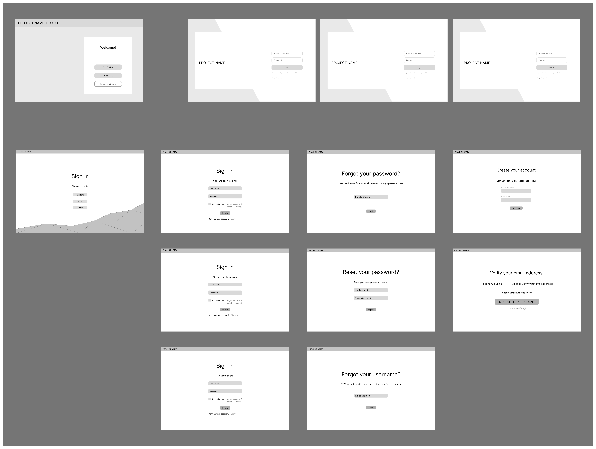
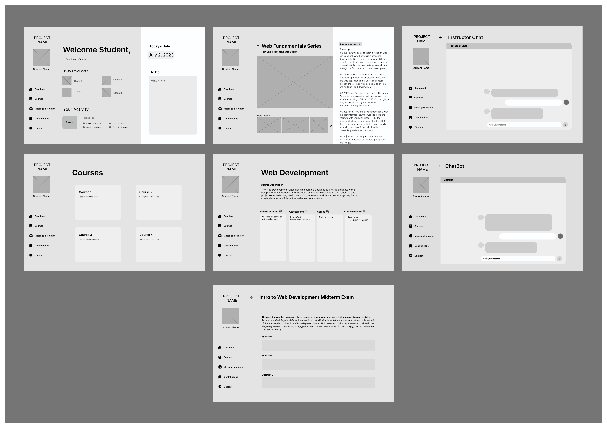
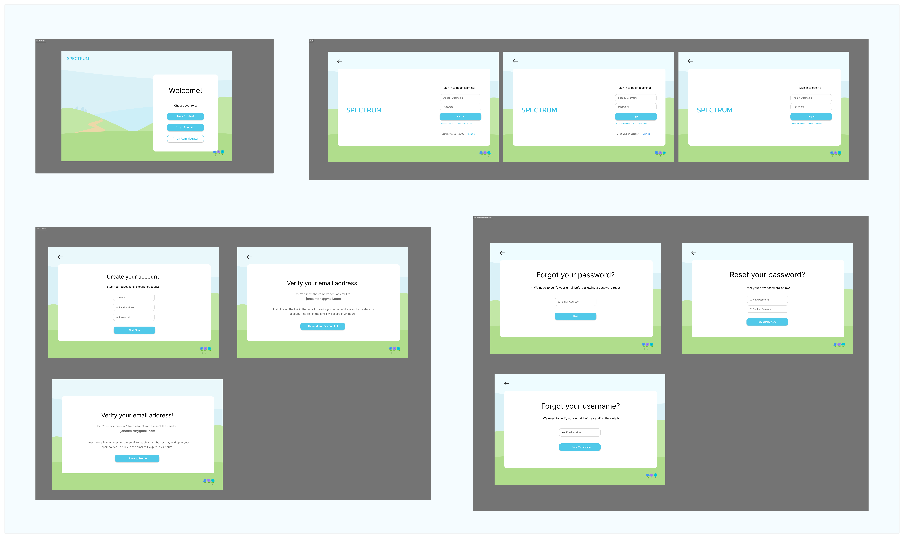
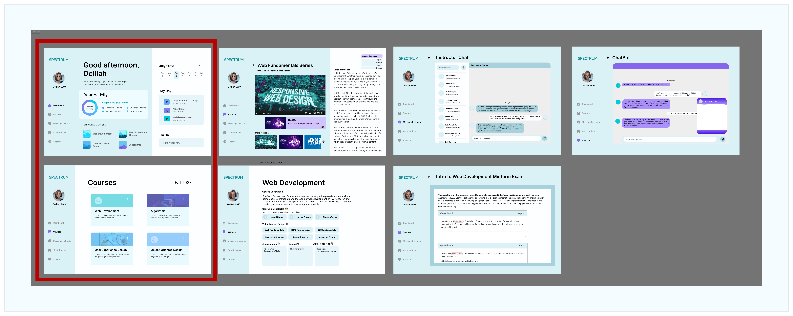

Spectrum
Spectrum is an educational technology project I worked on as an undergraduate researcher to explore the use of AI-powered learning tools. As part of this research project exploring the use of AI and immersive technologies for creating inclusive classrooms, I prototyped the user interface of a centralized student hub.
Research assistant
UX Designer
Research project
Figma
React
3 months
Overview
This project explores the design process of developing a web-based platform using AI/ML and immersive technologies to support student learning. It outlines the design and layout considerations we made when designing the platform. My role was to conceptualize and layout key pages like the home dashboard, course content area, discussion forums, and profile settings in order to create an accessible and engaging experience for all students.
Traditional classrooms just aren't built for how different people actually learn.
Through user research and interviews, we identified issues including lack of interactivity leading to disengagement, fast-paced lessons making content difficult to absorb for some groups, and consistent accessibility needs.
Our solution was creating a technology-mediated learning platform leveraging AI, machine learning, and immersive technologies to provide a more personalized, engaging, and equitable educational experience. We designed features to represent different learning styles, increase student participation, provide individualized accessibility accommodations, and appeal to students' different learning preferences. The goal was to promote inclusion by breaking down barriers around achievement, participation, and representation faced by students in conventional classrooms. This project was centered around human-centered design - using emerging technologies not just for interactivity but as a medium to enable more students to access education meaningfully.
Design Process
User Preferences & Stories
To better understand what students and professors would need from the platform, I broke down their needs separately, then mapped each one to a specific design element. This helped me brainstorm features I ended up incorporating in the final prototype.

INTERVIEWS
Conducting Interviews
We started by creating a template for semi-structured user interviews to address the main challenges students face in traditional classroom environments, as well as their perspectives on existing education technologies.
-
Our interview data overall showed us that non-interactive lectures can bore and disengage students. Additionally, overcrowded or fast-paced lessons make it difficult for some groups like students who speak non-English languages to absorb content. There were also consistent accessibility and representation issues calling for individualized accommodations and cultural responsiveness.
-
These insights highlighted needs around representing different learning styles, increasing student participation, accessibility accommodations, and cultural representation - which informed the key features to prioritize in our wireframes.
IDEATING
Design Thinking

Design Phase
Our Initial Idea (very rough sketch):
In our initial idea, the main aspect of the student hub is creating a centralized portal where learners can access all their learning resources in one place
-
We wanted students to easily be able to jump between important pages like the discussion forums, chatbots for help, and profile settings directly from other parts of the interface
-
Included games to cater to different learning styles and increase student engagement in a fun, interactive way

WIREFRAMES
Low-fidelity Wireframes
Onboarding designs:

Student Dashboard designs:

TESTING
Usability Testing
What they enjoyed
-
It was easy to navigate through the pages
-
Thought the content is organized nicely
-
Liked how resources are easily accessible
Improvements to be made
-
It could be helpful to add a schedule feature in the main page of the dashboard for students to see what their day looks like
-
Add information about the professor in the course page
-
Allow users to be able to navigate to different professors in the Instructor chat page
-
Make the current page that the user is on stand out to them with the page names on the side bar
-
Put actual courses on there to make it easier to visualize
-
Log in pages are simple, but a little boring
High-Fidelity Wireframes
WIREFRAMES
High-Fidelity Designs
Onboarding designs:

Student Dashboard designs (Red border frames are the ones I designed):

Prototype Walk-Through
Takeaways
Final Thoughts
This project pushed me to think about design from two very different perspectives at the same time. It wasn't just about making something students would enjoy using; it also had to work for professors managing a whole class. That balance shaped a lot of the decisions we made. Looking back, I would want to spend more time to actually build this out and test the AI features with real users to see what worked and what didn't.
wanna see my other projects? explore all projects →